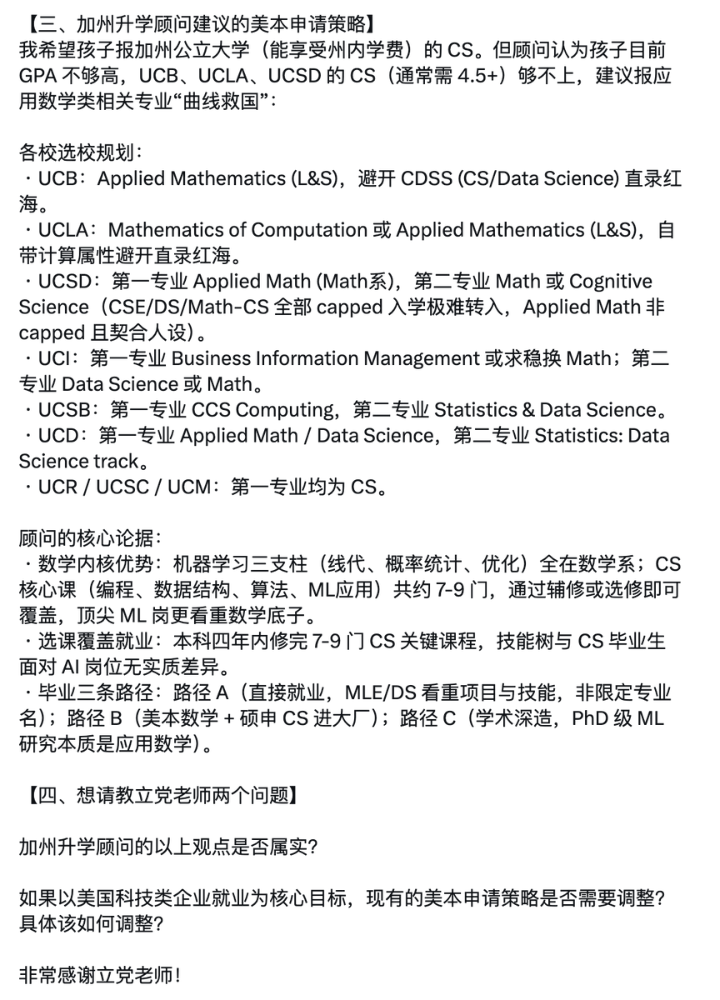

Wilf Lin
@Wilf_Lin
就目前的情况来看，数学应该作为爱好而不是专业，你会需要输血带来的洞察力，想象力和视角，但是不需要数学本身。

lidang 立党 （劝人卖房/学CS/买SP500/纳100/OpenAI/Anthrop第一人）
@lidangzzz
这些留学中介嘴里都是他妈什么理论。
众所周知，现在top 100名以外的CS申请难度高于UC Berkeley应用数学，于是这些傻逼中介开始哄骗家长们带孩子申请数学，
又是那一套傻逼张雪峰理论，“AI内核都是数学，本科学数学可真是太好了，比CS还牛逼”。
活该这些傻逼们被中介割韭菜，同时还浪费了本科四年。 https://t.co/C3za17wOGr